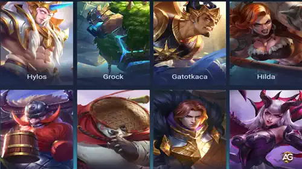

Este guia mostrará aos jogadores como rotacionar de forma eficaz como tanque, posicionar-se em situações-chave e dominar habilidades essenciais, como consciência de mapa e controle de objetivos. Vamos começar!

Ilustração dos personagens da rota de suporte no jogo Mobile Legends: Bang Bang
Após garantir a Tartaruga, continue fazendo ganks nas rotas com seu mago ou selva para garantir abates. Lembre-se, quatro Tartarugas surgem durante o jogo, então esteja sempre pronto para ajudar sua equipe a garantir elas. Quando a Tartaruga não estiver ativa, concentre-se em fornecer visão e evitar ganks inimigos. Ficar nos arbustos e alertar sua equipe sobre os movimentos inimigos pode salvar seus aliados de emboscadas e criar oportunidades para contra-ataques.
Durante os combates no final do jogo, seu papel como tanque se torna ainda mais crÃtico. Fique perto de seus causadores de dano, absorva o dano e use suas habilidades de controle de grupo para perturbar o time inimigo. Mantenha sempre a visão em áreas-chave, especialmente perto de objetivos. Use sua resistência para verificar arbustos com segurança e explorar as posições inimigas. Isso evita ataques surpresa e ajuda sua equipe a tomar decisões informadas.
Em uma partida intensa, uma equipe estava lutando durante o final do jogo. O time inimigo os eliminou duas vezes seguidas, mas cometeu um erro crÃtico ao não se manter unido. Isso permitiu que a equipe capitalizasse, eliminando o principal causador de dano do inimigo, Ling, e defendendo o Lord. Apesar de perder vários combates, a equipe conseguiu defender sua base e garantir uma vitória de virada.
Sua build deve se concentrar em itens defensivos que neutralizem a composição do time inimigo. Se o inimigo depende de dano fÃsico, compre itens como Couraça Antiga, Armadura de Lâminas ou DomÃnio de Gelo. Se eles dependem de dano mágico, opte por Protetor de Atena, Armadura Radiante ou Oráculo. Sempre se comunique com sua equipe para garantir uma coordenação eficaz. Use o chat do jogo ou comandos de voz para informar sua equipe quando você está iniciando, recuando ou quando sua habilidade ultimate está pronta.
Quando Tudo Parece Perdido: Uma Dica Revolucionária para Tanques
Você gostou do nosso Guia de Rotação para MLBB? Há algo que não entendeu ou gostaria de sugerir mudanças? Convidamos você a se juntar à nossa sessão de comentários na página do Alexandre Games Blog. Não hesite em expressar sua opinião, clarificar suas dúvidas e compartilhar sua sugestões. Clique no botão abaixo para começar:
 Guia de Johnson Mobile Legends
Guia de Johnson Mobile Legends
 Guia de Minotauro Mobile Legends
Guia de Minotauro Mobile Legends
 Guia de Tigreal Mobile Legends
Guia de Tigreal Mobile Legends